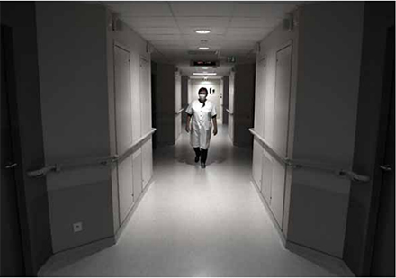

Charente
Attente à l'hôpital de proximité
Colette Devaine dans l’une des ailes du service médecine. Une partie du centre hospitalier,aujourd’hui déserte, doit être mobilisée en cas de recrudescence de la pandémie. PHOTO LOÏC DÉQUIER
Pas d'engorgement, pas de cas avéré, ni même de suspicion de Covid-19. À Confolens, comme dans la plupart des hôpitaux de zone rurale, la pandémie de coronavirus a surtout débouché sur un spectaculaire reflux d'activité. "Une baisse comprise entre 25 et 50 % selon les services", évalue le directeur de l'établissement charentais, Vincent You. "À titre d'exemple, on est passé de 35 passages quotidiens aux urgences à seulement sept."
Depuis la mi-mars, la salle de kinésithérapie sonne désespérément creux. Le service de radiothérapie n'est pas plus fréquenté, tandis que l'une des ailes du service de médecine a carrément bouclé ses portes. Au cas où une deuxième vague nécessite le concours de cet hôpital de niveau 3.
"Il y a le niveau 1, où sont prioritairement dirigés les patients atteints du coronavirus, hiérarchise Vincent You. Ceux du niveau 2, dans des villes moyennes, comme celui d'Angoulême. Et puis derrière, on est là pour suppléer en cas de besoin." Une position d'attente qui n'est pas nécessairement la plus favorable.